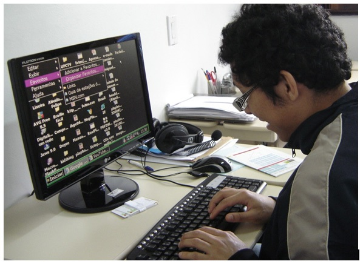

Uma internet para todos
Sites e aplicativos devem permitir que diferentes pessoas encontrem informações e utilizem seus recursos.

Navegação pelo teclado
Links e botões devem funcionar sem mouse. A tecla Tab permite percorrer os controles e Enter permite ativar links.
Conteúdo acessível
Imagens informativas precisam de descrição textual. Vídeos devem oferecer alternativas como legendas e textos. Títulos organizados e links descritivos ajudam na navegação.
Contraste e leitura
Textos legíveis, bom contraste e possibilidade de ampliação ajudam pessoas com baixa visão.
Referências
ENAP. eMAG Conteudista: Módulo 1 / Introdução (2016) e Módulo 2 / Web Acessível (2016).